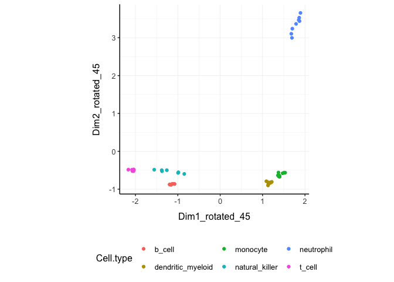

Brings transcriptomics to the tidyverse! (SEO: tidy differential expression)
website: stemangiola.github.io/tidybulk/
Please have a look also to
- nanny for tidy high-level data analysis and manipulation
- tidygate for adding custom gate information to your tibble
- tidyHeatmap for heatmaps produced with tidy principles
Functions/utilities available
| Function | Description |
|---|---|
aggregate_duplicates |
Aggregate abundance and annotation of duplicated transcripts in a robust way |
scale_abundance |
Scale (normalise) abundance for RNA sequencing depth |
reduce_dimensions |
Perform dimensionality reduction (PCA, MDS, tSNE) |
cluster_elements |
Labels elements with cluster identity (kmeans, SNN) |
remove_redundancy |
Filter out elements with highly correlated features |
adjust_abundance |
Remove known unwanted variation (Combat) |
test_differential_abundance |
Differential transcript abundance testing (DE) |
deconvolve_cellularity |
Estimated tissue composition (Cibersort or llsr) |
test_differential_cellularity |
Differential cell-type abundance testing |
keep_variable |
Filter for top variable features |
keep_abundant |
Filter out lowly abundant transcripts |
test_gene_enrichment |
Gene enrichment analyses (EGSEA) |
test_gene_overrepresentation |
Gene enrichment on list of transcript names (no rank) |
| Utilities | Description |
|---|---|
get_bibliography |
Get the bibliography of your workflow |
tidybulk |
add tidybulk attributes to a tibble object |
tidybulk_SAM_BAM |
Convert SAM BAM files into tidybulk tibble |
pivot_sample |
Select sample-wise columns/information |
pivot_transcript |
Select transcript-wise columns/information |
rotate_dimensions |
Rotate two dimensions of a degree |
ensembl_to_symbol |
Add gene symbol from ensembl IDs |
symbol_to_entrez |
Add entrez ID from gene symbol |
describe_transcript |
Add gene description from gene symbol |
impute_missing_abundance |
Impute abundance for missing data points using sample groupings |
fill_missing_abundance |
Fill abundance for missing data points using an arbitrary value |
Output data frame
| sample | transcript | abundance | annotation | new information |
|---|---|---|---|---|
chr or fctr
|
chr or fctr
|
integer |
… | … |
All functions are also directly compatible with SummarizedExperiment object.
Installation
From Bioconductor
BiocManager::install("tidybulk")
From Github
devtools::install_github("stemangiola/tidybulk")
Create tidybulk tibble.
It memorises key column names
tt = counts %>% tidybulk(sample, transcript, count)
Get the bibliography of your workflow
First of all, you can cite all articles utilised within your workflow automatically from any tidybulk tibble
tt %>% # call analysis functions get_bibliography()
Aggregate duplicated transcripts
tidybulk provide the aggregate_duplicates function to aggregate duplicated transcripts (e.g., isoforms, ensembl). For example, we often have to convert ensembl symbols to gene/transcript symbol, but in doing so we have to deal with duplicates. aggregate_duplicates takes a tibble and column names (as symbols; for sample, transcript and count) as arguments and returns a tibble with transcripts with the same name aggregated. All the rest of the columns are appended, and factors and boolean are appended as characters.
TidyTranscriptomics
r yellow tt.aggr = tt %>% aggregate_duplicates()
Standard procedure (comparative purpose)
Scale counts
We may want to compensate for sequencing depth, scaling the transcript abundance (e.g., with TMM algorithm, Robinson and Oshlack doi.org/10.1186/gb-2010-11-3-r25). scale_abundance takes a tibble, column names (as symbols; for sample, transcript and count) and a method as arguments and returns a tibble with additional columns with scaled data as <NAME OF COUNT COLUMN>_scaled.
TidyTranscriptomics
tt.norm = tt.aggr %>% scale_abundance()
Standard procedure (comparative purpose)
We can easily plot the scaled density to check the scaling outcome. On the x axis we have the log scaled counts, on the y axes we have the density, data is grouped by sample and coloured by cell type.
tt.norm %>% ggplot(aes(count_scaled + 1, group=sample, color=`Cell type`)) + geom_density() + scale_x_log10() + my_theme

Filter variable transcripts
We may want to identify and filter variable transcripts.
TidyTranscriptomics
tt.norm.variable = tt.norm %>% keep_variable()
Standard procedure (comparative purpose)
library(edgeR) x = norm_counts.table s <- rowMeans((x-rowMeans(x))^2) o <- order(s,decreasing=TRUE) x <- x[o[1L:top],,drop=FALSE] norm_counts.table = norm_counts.table[rownames(x)] norm_counts.table$cell_type = tidybulk::counts[ match( tidybulk::counts$sample, rownames(norm_counts.table) ), "Cell type" ]
Reduce dimensions
We may want to reduce the dimensions of our data, for example using PCA or MDS algorithms. reduce_dimensions takes a tibble, column names (as symbols; for sample, transcript and count) and a method (e.g., MDS or PCA) as arguments and returns a tibble with additional columns for the reduced dimensions.
MDS (Robinson et al., 10.1093/bioinformatics/btp616)
TidyTranscriptomics
tt.norm.MDS = tt.norm %>% reduce_dimensions(method="MDS", .dims = 6)
Standard procedure (comparative purpose)
On the x and y axes axis we have the reduced dimensions 1 to 3, data is coloured by cell type.
tt.norm.MDS %>% pivot_sample() %>% select(contains("Dim"), everything())
## # A tibble: 48 x 15
## Dim1 Dim2 Dim3 Dim4 Dim5 Dim6 sample `Cell type` time
## <dbl> <dbl> <dbl> <dbl> <dbl> <dbl> <chr> <chr> <chr>
## 1 -1.52 0.559 -2.06 0.111 0.125 -0.239 SRR17… b_cell 0 d
## 2 -1.51 0.548 -2.08 0.0950 0.0942 -0.230 SRR17… b_cell 1 d
## 3 -1.49 0.519 -2.00 0.136 0.102 -0.229 SRR17… b_cell 3 d
## 4 -1.50 0.527 -2.04 0.157 0.0953 -0.196 SRR17… b_cell 7 d
## 5 0.150 -1.84 0.0708 -0.0425 -0.781 -0.207 SRR17… dendritic_… 0 d
## 6 0.0907 -1.82 0.0922 -0.00628 -0.704 -0.205 SRR17… dendritic_… 1 d
## 7 0.161 -1.82 0.0301 -0.0586 -0.940 -0.179 SRR17… dendritic_… 3 d
## 8 0.0450 -1.84 0.0818 -0.00920 -0.714 -0.184 SRR17… dendritic_… 7 d
## 9 0.407 -1.95 0.200 -0.315 0.742 -0.209 SRR17… monocyte 0 d
## 10 0.412 -1.90 0.198 -0.300 0.728 -0.186 SRR17… monocyte 1 d
## # … with 38 more rows, and 6 more variables: condition <chr>, batch <dbl>,
## # factor_of_interest <chr>, `merged transcripts` <dbl>, TMM <dbl>,
## # multiplier <dbl>tt.norm.MDS %>% pivot_sample() %>% GGally::ggpairs(columns = 10:15, ggplot2::aes(colour=`Cell type`))

PCA
TidyTranscriptomics
tt.norm.PCA = tt.norm %>% reduce_dimensions(method="PCA", .dims = 6)
Standard procedure (comparative purpose)
On the x and y axes axis we have the reduced dimensions 1 to 3, data is coloured by cell type.
tt.norm.PCA %>% pivot_sample() %>% select(contains("PC"), everything())
## # A tibble: 48 x 15
## PC1 PC2 PC3 PC4 PC5 PC6 sample `Cell type` time condition
## <dbl> <dbl> <dbl> <dbl> <dbl> <dbl> <chr> <chr> <chr> <chr>
## 1 -12.8 -1.94 -15.6 -0.578 -0.600 -1.32 SRR17… b_cell 0 d TRUE
## 2 -12.8 -1.94 -15.8 -0.279 -0.396 -1.36 SRR17… b_cell 1 d TRUE
## 3 -12.8 -1.86 -15.2 -0.803 -0.388 -1.20 SRR17… b_cell 3 d TRUE
## 4 -12.7 -1.73 -15.5 -0.850 -0.489 -1.05 SRR17… b_cell 7 d TRUE
## 5 1.29 13.4 1.79 0.0409 4.82 -1.46 SRR17… dendritic_… 0 d FALSE
## 6 0.794 13.3 1.90 -0.0114 4.32 -1.39 SRR17… dendritic_… 1 d FALSE
## 7 1.43 13.4 1.55 -0.0722 5.59 -1.19 SRR17… dendritic_… 3 d FALSE
## 8 0.412 13.5 1.90 -0.188 4.28 -1.19 SRR17… dendritic_… 7 d FALSE
## 9 3.84 13.7 2.64 2.16 -4.48 -1.36 SRR17… monocyte 0 d FALSE
## 10 3.86 13.3 2.51 2.00 -4.48 -1.49 SRR17… monocyte 1 d FALSE
## # … with 38 more rows, and 5 more variables: batch <dbl>,
## # factor_of_interest <chr>, `merged transcripts` <dbl>, TMM <dbl>,
## # multiplier <dbl>tt.norm.PCA %>% pivot_sample() %>% GGally::ggpairs(columns = 10:12, ggplot2::aes(colour=`Cell type`))

tSNE
TidyTranscriptomics
tt.norm.tSNE = breast_tcga_mini %>% tidybulk( sample, ens, count_scaled) %>% reduce_dimensions( method = "tSNE", perplexity=10, pca_scale =TRUE )
Standard procedure (comparative purpose)
Plot
tt.norm.tSNE %>% pivot_sample() %>% select(contains("tSNE"), everything())
## # A tibble: 251 x 4
## tSNE1 tSNE2 sample Call
## <dbl> <dbl> <chr> <fct>
## 1 -4.95 5.57 TCGA-A1-A0SD-01A-11R-A115-07 LumA
## 2 6.24 -11.3 TCGA-A1-A0SF-01A-11R-A144-07 LumA
## 3 -11.4 2.97 TCGA-A1-A0SG-01A-11R-A144-07 LumA
## 4 -6.53 -8.35 TCGA-A1-A0SH-01A-11R-A084-07 LumA
## 5 -7.29 -12.6 TCGA-A1-A0SI-01A-11R-A144-07 LumB
## 6 1.78 5.05 TCGA-A1-A0SJ-01A-11R-A084-07 LumA
## 7 28.4 -13.7 TCGA-A1-A0SK-01A-12R-A084-07 Basal
## 8 10.1 2.78 TCGA-A1-A0SM-01A-11R-A084-07 LumA
## 9 9.19 3.94 TCGA-A1-A0SN-01A-11R-A144-07 LumB
## 10 -17.8 9.12 TCGA-A1-A0SQ-01A-21R-A144-07 LumA
## # … with 241 more rowstt.norm.tSNE %>% pivot_sample() %>% ggplot(aes(x = `tSNE1`, y = `tSNE2`, color=Call)) + geom_point() + my_theme

Rotate dimensions
We may want to rotate the reduced dimensions (or any two numeric columns really) of our data, of a set angle. rotate_dimensions takes a tibble, column names (as symbols; for sample, transcript and count) and an angle as arguments and returns a tibble with additional columns for the rotated dimensions. The rotated dimensions will be added to the original data set as <NAME OF DIMENSION> rotated <ANGLE> by default, or as specified in the input arguments.
TidyTranscriptomics
tt.norm.MDS.rotated = tt.norm.MDS %>% rotate_dimensions(`Dim1`, `Dim2`, rotation_degrees = 45, action="get")
Standard procedure (comparative purpose)
Original On the x and y axes axis we have the first two reduced dimensions, data is coloured by cell type.
tt.norm.MDS.rotated %>% ggplot(aes(x=`Dim1`, y=`Dim2`, color=`Cell type` )) + geom_point() + my_theme
Rotated On the x and y axes axis we have the first two reduced dimensions rotated of 45 degrees, data is coloured by cell type.
tt.norm.MDS.rotated %>% ggplot(aes(x=`Dim1 rotated 45`, y=`Dim2 rotated 45`, color=`Cell type` )) + geom_point() + my_theme

Test differential abundance
We may want to test for differential transcription between sample-wise factors of interest (e.g., with edgeR). test_differential_abundance takes a tibble, column names (as symbols; for sample, transcript and count) and a formula representing the desired linear model as arguments and returns a tibble with additional columns for the statistics from the hypothesis test (e.g., log fold change, p-value and false discovery rate).
TidyTranscriptomics
tt.de = tt %>% test_differential_abundance( ~ condition, action="get") tt.de
Standard procedure (comparative purpose)
library(edgeR) dgList <- DGEList(counts=counts_m,group=group) keep <- filterByExpr(dgList) dgList <- dgList[keep,,keep.lib.sizes=FALSE] dgList <- calcNormFactors(dgList) design <- model.matrix(~group) dgList <- estimateDisp(dgList,design) fit <- glmQLFit(dgList,design) qlf <- glmQLFTest(fit,coef=2) topTags(qlf, n=Inf)
The functon test_differential_abundance operated with contrasts too. The constrasts hve the name of the design matrix (generally
tt.de = tt %>% test_differential_abundance( ~ 0 + condition, .contrasts = c( "conditionTRUE - conditionFALSE"), action="get" )
Adjust counts
We may want to adjust counts for (known) unwanted variation. adjust_abundance takes as arguments a tibble, column names (as symbols; for sample, transcript and count) and a formula representing the desired linear model where the first covariate is the factor of interest and the second covariate is the unwanted variation, and returns a tibble with additional columns for the adjusted counts as <COUNT COLUMN>_adjusted. At the moment just an unwanted covariated is allowed at a time.
TidyTranscriptomics
tt.norm.adj = tt.norm %>% adjust_abundance( ~ factor_of_interest + batch)
Standard procedure (comparative purpose)
library(sva) count_m_log = log(count_m + 1) design = model.matrix( object = ~ factor_of_interest + batch, data = annotation ) count_m_log.sva = ComBat( batch = design[,2], mod = design, ... ) count_m_log.sva = ceiling(exp(count_m_log.sva) -1) count_m_log.sva$cell_type = counts[ match(counts$sample, rownames(count_m_log.sva)), "Cell type" ]
Deconvolve Cell type composition
We may want to infer the cell type composition of our samples (with the algorithm Cibersort; Newman et al., 10.1038/nmeth.3337). deconvolve_cellularity takes as arguments a tibble, column names (as symbols; for sample, transcript and count) and returns a tibble with additional columns for the adjusted cell type proportions.
TidyTranscriptomics
tt.cibersort = tt %>% deconvolve_cellularity(action="get", cores=1)
Standard procedure (comparative purpose)
With the new annotated data frame, we can plot the distributions of cell types across samples, and compare them with the nominal cell type labels to check for the purity of isolation. On the x axis we have the cell types inferred by Cibersort, on the y axis we have the inferred proportions. The data is facetted and coloured by nominal cell types (annotation given by the researcher after FACS sorting).
tt.cibersort %>% select(contains("cibersort:"), everything()) %>% gather(`Cell type inferred`, `proportion`, 1:22) %>% ggplot(aes(x=`Cell type inferred`, y=proportion, fill=`Cell type`)) + geom_boxplot() + facet_wrap(~`Cell type`) + my_theme + theme(axis.text.x = element_text(angle = 90, hjust = 1, vjust = 0.5), aspect.ratio=1/5)

Test differential cell-type abundance
We can also perform a statistical test on the differential cell-type abundance across conditions
tt %>%
test_differential_cellularity( ~ condition )
## # A tibble: 22 x 7
## .cell_type cell_type_propo… `estimate_(Inte… estimate_condit…
## <chr> <list> <dbl> <dbl>
## 1 B cells n… <tibble [48 × 9… -3.38 3.17
## 2 B cells m… <tibble [48 × 9… -2.98 2.83
## 3 Plasma ce… <tibble [48 × 9… -7.09 -0.508
## 4 T cells C… <tibble [48 × 9… -4.05 -0.445
## 5 T cells C… <tibble [48 × 9… -1.93 0.0167
## 6 T cells C… <tibble [48 × 9… -3.07 -0.533
## 7 T cells C… <tibble [48 × 9… -5.97 1.46
## 8 T cells f… <tibble [48 × 9… -5.17 -0.469
## 9 T cells r… <tibble [48 × 9… -5.62 -0.602
## 10 T cells g… <tibble [48 × 9… -5.53 1.02
## # … with 12 more rows, and 3 more variables: std.error_conditionTRUE <dbl>,
## # statistic_conditionTRUE <dbl>, p.value_conditionTRUE <dbl>We can also perform regression analysis with censored data (coxph).
tt %>%
test_differential_cellularity(survival::Surv(time, dead) ~ .)
Cluster samples
We may want to cluster our data (e.g., using k-means sample-wise). cluster_elements takes as arguments a tibble, column names (as symbols; for sample, transcript and count) and returns a tibble with additional columns for the cluster annotation. At the moment only k-means clustering is supported, the plan is to introduce more clustering methods.
k-means
TidyTranscriptomics
tt.norm.cluster = tt.norm.MDS %>% cluster_elements(method="kmeans", centers = 2, action="get" )
Standard procedure (comparative purpose)
We can add cluster annotation to the MDS dimesion reduced data set and plot.
tt.norm.cluster %>% ggplot(aes(x=`Dim1`, y=`Dim2`, color=`cluster kmeans`)) + geom_point() + my_theme

SNN
TidyTranscriptomics
tt.norm.SNN = tt.norm.tSNE %>% cluster_elements(method = "SNN")
Standard procedure (comparative purpose)
library(Seurat) snn = CreateSeuratObject(count_m) snn = ScaleData( snn, display.progress = TRUE, num.cores=4, do.par = TRUE ) snn = FindVariableFeatures(snn, selection.method = "vst") snn = FindVariableFeatures(snn, selection.method = "vst") snn = RunPCA(snn, npcs = 30) snn = FindNeighbors(snn) snn = FindClusters(snn, method = "igraph", ...) snn = snn[["seurat_clusters"]] snn$cell_type = tidybulk::counts[ match(tidybulk::counts$sample, rownames(snn)), c("Cell type", "Dim1", "Dim2") ]
tt.norm.SNN %>% pivot_sample() %>% select(contains("tSNE"), everything())
## # A tibble: 251 x 5
## tSNE1 tSNE2 sample Call `cluster SNN`
## <dbl> <dbl> <chr> <fct> <fct>
## 1 -4.95 5.57 TCGA-A1-A0SD-01A-11R-A115-07 LumA 0
## 2 6.24 -11.3 TCGA-A1-A0SF-01A-11R-A144-07 LumA 2
## 3 -11.4 2.97 TCGA-A1-A0SG-01A-11R-A144-07 LumA 1
## 4 -6.53 -8.35 TCGA-A1-A0SH-01A-11R-A084-07 LumA 0
## 5 -7.29 -12.6 TCGA-A1-A0SI-01A-11R-A144-07 LumB 0
## 6 1.78 5.05 TCGA-A1-A0SJ-01A-11R-A084-07 LumA 1
## 7 28.4 -13.7 TCGA-A1-A0SK-01A-12R-A084-07 Basal 3
## 8 10.1 2.78 TCGA-A1-A0SM-01A-11R-A084-07 LumA 2
## 9 9.19 3.94 TCGA-A1-A0SN-01A-11R-A144-07 LumB 2
## 10 -17.8 9.12 TCGA-A1-A0SQ-01A-21R-A144-07 LumA 1
## # … with 241 more rowstt.norm.SNN %>% pivot_sample() %>% gather(source, Call, c("cluster SNN", "Call")) %>% distinct() %>% ggplot(aes(x = `tSNE1`, y = `tSNE2`, color=Call)) + geom_point() + facet_grid(~source) + my_theme

# Do differential transcription between clusters tt.norm.SNN %>% mutate(factor_of_interest = `cluster SNN` == 3) %>% test_differential_abundance( ~ factor_of_interest, action="get" )
## # A tibble: 500 x 8
## ens logFC logCPM F PValue FDR significant lowly_abundant
## <chr> <dbl> <dbl> <dbl> <dbl> <dbl> <lgl> <lgl>
## 1 ENSG00000… -0.981 10.7 42.9 3.13e-10 8.86e-10 TRUE FALSE
## 2 ENSG00000… -3.54 9.92 81.9 3.99e-17 2.10e-16 TRUE FALSE
## 3 ENSG00000… -0.154 10.6 1.20 2.74e- 1 2.96e- 1 FALSE FALSE
## 4 ENSG00000… -0.669 10.7 30.5 8.14e- 8 1.75e- 7 TRUE FALSE
## 5 ENSG00000… 0.826 11.3 78.4 1.49e-16 7.45e-16 TRUE FALSE
## 6 ENSG00000… 0.412 11.3 32.1 3.92e- 8 8.72e- 8 TRUE FALSE
## 7 ENSG00000… 0.0782 10.5 0.569 4.51e- 1 4.73e- 1 FALSE FALSE
## 8 ENSG00000… -1.13 11.1 34.5 1.33e- 8 3.19e- 8 TRUE FALSE
## 9 ENSG00000… 0.238 11.8 0.256 6.13e- 1 6.31e- 1 FALSE FALSE
## 10 ENSG00000… -1.68 10.5 92.0 8.66e-19 5.15e-18 TRUE FALSE
## # … with 490 more rows
Drop redundant transcripts
We may want to remove redundant elements from the original data set (e.g., samples or transcripts), for example if we want to define cell-type specific signatures with low sample redundancy. remove_redundancy takes as arguments a tibble, column names (as symbols; for sample, transcript and count) and returns a tibble with redundant elements removed (e.g., samples). Two redundancy estimation approaches are supported:
- removal of highly correlated clusters of elements (keeping a representative) with method=“correlation”
- removal of most proximal element pairs in a reduced dimensional space.
Approach 1
TidyTranscriptomics
tt.norm.non_redundant = tt.norm.MDS %>% remove_redundancy( method = "correlation" )
Standard procedure (comparative purpose)
library(widyr) .data.correlated = pairwise_cor( counts, sample, transcript, rc, sort = TRUE, diag = FALSE, upper = FALSE ) %>% filter(correlation > correlation_threshold) %>% distinct(item1) %>% rename(!!.element := item1) # Return non redudant data frame counts %>% anti_join(.data.correlated) %>% spread(sample, rc, - transcript) %>% left_join(annotation)
We can visualise how the reduced redundancy with the reduced dimentions look like
tt.norm.non_redundant %>% pivot_sample() %>% ggplot(aes(x=`Dim1`, y=`Dim2`, color=`Cell type`)) + geom_point() + my_theme

Approach 2
tt.norm.non_redundant = tt.norm.MDS %>% remove_redundancy( method = "reduced_dimensions", Dim_a_column = `Dim1`, Dim_b_column = `Dim2` )
We can visualise MDS reduced dimensions of the samples with the closest pair removed.
tt.norm.non_redundant %>% pivot_sample() %>% ggplot(aes(x=`Dim1`, y=`Dim2`, color=`Cell type`)) + geom_point() + my_theme

Other useful wrappers
The above wrapper streamline the most common processing of bulk RNA sequencing data. Other useful wrappers are listed above.
From BAM/SAM to tibble of gene counts
We can calculate gene counts (using FeatureCounts; Liao Y et al., 10.1093/nar/gkz114) from a list of BAM/SAM files and format them into a tidy structure (similar to counts).
counts = tidybulk_SAM_BAM( file_names, genome = "hg38", isPairedEnd = TRUE, requireBothEndsMapped = TRUE, checkFragLength = FALSE, useMetaFeatures = TRUE )
From ensembl IDs to gene symbol IDs
We can add gene symbols from ensembl identifiers. This is useful since different resources use ensembl IDs while others use gene symbol IDs. This currently works for human and mouse.
counts_ensembl %>% ensembl_to_symbol(ens)
## # A tibble: 119 x 8
## ens iso `read count` sample cases_0_project… cases_0_samples… transcript
## <chr> <chr> <dbl> <chr> <chr> <chr> <chr>
## 1 ENSG… 13 144 TARGE… Acute Myeloid L… Primary Blood D… TSPAN6
## 2 ENSG… 13 72 TARGE… Acute Myeloid L… Primary Blood D… TSPAN6
## 3 ENSG… 13 0 TARGE… Acute Myeloid L… Primary Blood D… TSPAN6
## 4 ENSG… 13 1099 TARGE… Acute Myeloid L… Primary Blood D… TSPAN6
## 5 ENSG… 13 11 TARGE… Acute Myeloid L… Primary Blood D… TSPAN6
## 6 ENSG… 13 2 TARGE… Acute Myeloid L… Primary Blood D… TSPAN6
## 7 ENSG… 13 3 TARGE… Acute Myeloid L… Primary Blood D… TSPAN6
## 8 ENSG… 13 2678 TARGE… Acute Myeloid L… Primary Blood D… TSPAN6
## 9 ENSG… 13 751 TARGE… Acute Myeloid L… Primary Blood D… TSPAN6
## 10 ENSG… 13 1 TARGE… Acute Myeloid L… Primary Blood D… TSPAN6
## # … with 109 more rows, and 1 more variable: ref_genome <chr>From gene symbol to gene description (gene name in full)
We can add gene full name (and in future description) from symbol identifiers. This currently works for human and mouse.
tt %>% describe_transcript() %>% select(transcript, description, everything())
## # A tibble: 938,112 x 9
## transcript description sample `Cell type` count time condition batch
## <chr> <chr> <fct> <fct> <dbl> <fct> <lgl> <int>
## 1 DDX11L1 DEAD/H-box… SRR17… b_cell 17 0 d TRUE 0
## 2 WASH7P WASP famil… SRR17… b_cell 3568 0 d TRUE 0
## 3 MIR6859-1 microRNA 6… SRR17… b_cell 57 0 d TRUE 0
## 4 MIR1302-2 microRNA 1… SRR17… b_cell 1 0 d TRUE 0
## 5 FAM138A family wit… SRR17… b_cell 0 0 d TRUE 0
## 6 OR4F5 olfactory … SRR17… b_cell 0 0 d TRUE 0
## 7 LOC729737 uncharacte… SRR17… b_cell 1764 0 d TRUE 0
## 8 LOC102725… DEAD/H-box… SRR17… b_cell 11 0 d TRUE 0
## 9 MIR6859-2 microRNA 6… SRR17… b_cell 40 0 d TRUE 0
## 10 OR4F29 olfactory … SRR17… b_cell 0 0 d TRUE 0
## # … with 938,102 more rows, and 1 more variable: factor_of_interest <lgl>ADD versus GET versus ONLY modes
Every function takes a tidytranscriptomics structured data as input, and
(i) with action=“add” outputs the new information joint to the original input data frame (default), (ii) with action=“get” the new information with the sample or transcript relative informatin depending on what the analysis is about, or (iii) with action=“only” just the new information. For example, from this data set
tt.norm
## # A tibble: 938,112 x 13
## sample transcript `Cell type` count time condition batch factor_of_inter…
## <chr> <chr> <chr> <dbl> <chr> <chr> <dbl> <chr>
## 1 SRR17… A1BG b_cell 153 0 d TRUE 0 TRUE
## 2 SRR17… A1BG-AS1 b_cell 83 0 d TRUE 0 TRUE
## 3 SRR17… A2M-AS1 b_cell 0 0 d TRUE 0 TRUE
## 4 SRR17… A2ML1 b_cell 3 0 d TRUE 0 TRUE
## 5 SRR17… A2MP1 b_cell 0 0 d TRUE 0 TRUE
## 6 SRR17… A3GALT2 b_cell 0 0 d TRUE 0 TRUE
## 7 SRR17… A4GALT b_cell 4 0 d TRUE 0 TRUE
## 8 SRR17… A4GNT b_cell 0 0 d TRUE 0 TRUE
## 9 SRR17… AA06 b_cell 0 0 d TRUE 0 TRUE
## 10 SRR17… AAAS b_cell 868 0 d TRUE 0 TRUE
## # … with 938,102 more rows, and 5 more variables: `merged transcripts` <dbl>,
## # count_scaled <dbl>, TMM <dbl>, multiplier <dbl>, lowly_abundant <lgl>action=“add” (Default) We can add the MDS dimensions to the original data set
tt.norm %>% reduce_dimensions( .abundance = count_scaled, method="MDS" , .element = sample, .feature = transcript, .dims = 3, action="add" )
## # A tibble: 938,112 x 16
## sample transcript `Cell type` count time condition batch factor_of_inter…
## <chr> <chr> <chr> <dbl> <chr> <chr> <dbl> <chr>
## 1 SRR17… A1BG b_cell 153 0 d TRUE 0 TRUE
## 2 SRR17… A1BG-AS1 b_cell 83 0 d TRUE 0 TRUE
## 3 SRR17… A2M-AS1 b_cell 0 0 d TRUE 0 TRUE
## 4 SRR17… A2ML1 b_cell 3 0 d TRUE 0 TRUE
## 5 SRR17… A2MP1 b_cell 0 0 d TRUE 0 TRUE
## 6 SRR17… A3GALT2 b_cell 0 0 d TRUE 0 TRUE
## 7 SRR17… A4GALT b_cell 4 0 d TRUE 0 TRUE
## 8 SRR17… A4GNT b_cell 0 0 d TRUE 0 TRUE
## 9 SRR17… AA06 b_cell 0 0 d TRUE 0 TRUE
## 10 SRR17… AAAS b_cell 868 0 d TRUE 0 TRUE
## # … with 938,102 more rows, and 8 more variables: `merged transcripts` <dbl>,
## # count_scaled <dbl>, TMM <dbl>, multiplier <dbl>, lowly_abundant <lgl>,
## # Dim1 <dbl>, Dim2 <dbl>, Dim3 <dbl>action=“get” We can add the MDS dimensions to the original data set selecting just the sample-wise column
tt.norm %>% reduce_dimensions( .abundance = count_scaled, method="MDS" , .element = sample, .feature = transcript, .dims = 3, action="get" )
## # A tibble: 48 x 12
## sample `Cell type` time condition batch factor_of_inter… `merged transcr…
## <chr> <chr> <chr> <chr> <dbl> <chr> <dbl>
## 1 SRR17… b_cell 0 d TRUE 0 TRUE 1
## 2 SRR17… b_cell 1 d TRUE 1 TRUE 1
## 3 SRR17… b_cell 3 d TRUE 1 TRUE 1
## 4 SRR17… b_cell 7 d TRUE 1 TRUE 1
## 5 SRR17… dendritic_… 0 d FALSE 0 FALSE 1
## 6 SRR17… dendritic_… 1 d FALSE 0 FALSE 1
## 7 SRR17… dendritic_… 3 d FALSE 1 FALSE 1
## 8 SRR17… dendritic_… 7 d FALSE 0 FALSE 1
## 9 SRR17… monocyte 0 d FALSE 1 FALSE 1
## 10 SRR17… monocyte 1 d FALSE 1 FALSE 1
## # … with 38 more rows, and 5 more variables: TMM <dbl>, multiplier <dbl>,
## # Dim1 <dbl>, Dim2 <dbl>, Dim3 <dbl>action=“only” We can get just the MDS dimensions relative to each sample
tt.norm %>% reduce_dimensions( .abundance = count_scaled, method="MDS" , .element = sample, .feature = transcript, .dims = 3, action="only" )
## # A tibble: 48 x 4
## sample Dim1 Dim2 Dim3
## <chr> <dbl> <dbl> <dbl>
## 1 SRR1740034 -1.52 0.559 -2.06
## 2 SRR1740035 -1.51 0.548 -2.08
## 3 SRR1740036 -1.49 0.519 -2.00
## 4 SRR1740037 -1.50 0.527 -2.04
## 5 SRR1740038 0.150 -1.84 0.0708
## 6 SRR1740039 0.0907 -1.82 0.0922
## 7 SRR1740040 0.161 -1.82 0.0301
## 8 SRR1740041 0.0450 -1.84 0.0818
## 9 SRR1740042 0.407 -1.95 0.200
## 10 SRR1740043 0.412 -1.90 0.198
## # … with 38 more rows